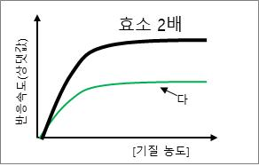

해설 3
채점 기준:
| 하위 문항 | 채점 기준 | 배점 |
|---|---|---|
| 단계1 | (나) 경쟁적 저해제는 (가) 효소의 활성 부위에 대해 기질과 경쟁하며 기질의 농도가 매우 많아지면 점차 효소 반응의 최대 속도까지 도달할 수 있다. (15점) / (다) 비경쟁적 저해제는 효소의 활성 부위가 아닌 알로스테릭 (입체자리) 부위에 결합하여 효소의 형태를 변화시키고 기질이 효소에 결합하는 것을 방해한다. 효소의 양을 늘려도 저해제가 없을 때 만큼의 반응 최대속도에 도달하기 어렵다. (15점) | 30 |
| 단계2 | 효소를 2배로 더 넣어 준 경우 기질 농도에 따른 반응속도는 증가할 것이다. 그래프의 y-축인 최대속도 (상댓값)은 (다)보다 2배정도 빠르게 반응이 일어날 것이다. (15점) / 경쟁적 저해제와 비경쟁적 저해제의 작용을 구분할 수 있어야 한다. (15점) | 30 |
| 단계3 | 산소의 양은 시험관 II → III → I 순서로 많이 발생할 것이다. (10점) / 시험관 I에는 감자즙이 없어 효소작용이 일어나지 않으며, 시험관 III에서는 NaOH에 의해 pH의 변화가 생겨 효소의 활성이 억제될 것이다. (15점) / 이 실험을 통해 효소의 작용은 pH의 영향을 받는다는 과학적 사실을 결론내릴 수 있을 것이다. (15점) | 40 |
단계1. 저해제가 있을 경우 효소의 활성에 영향을 미친다.
(나)는 경쟁적 저해제가 있는 경우이며, 효소의 활성 부위에 결합할 수 있어 기질과 경쟁하게 된다. 따라서 기질의 농도가 매우 많아지면 점차 효소 반응의 최대 속도까지 도달할 수 있다.
(다)는 비경쟁적 저해제가 있을 경우이며, 효소의 활성 부위가 아닌 알로스테릭 부위에 결합하여 효소의 형태를 변화시킨다. 그로인해 기질이 효소에 결합할 수 없어 효소-기질 결합물의 형성이 잘 안 이루어지므로 아무리 효소의 양을 늘려도 저해제가 없을 때 만큼의 반응 최대속도에 도달하기 어렵다.
단계2. 효소를 2배로 더 넣어 준 경우 기질 농도에 따른 반응속도는 증가할 것이다. 그래프의 y-축인 최대속도 (상댓값)은 (다)보다 2배정도 빠르게 반응이 일어날 것이다.

단계3. 산소의 양은 시험관 II → III → I 순서로 많이 발생할 것이다. 시험관 I에는 감자즙이 없어 효소작용이 일어나지 않으며, 시험관 III에서는 NaOH에 의해 pH의 변화가 생겨 효소의 활성이 억제될 것이다. 이 실험을 통해 효소의 작용은 pH의 영향을 받는다는 과학적 사실을 결론내릴 수 있을 것이다.